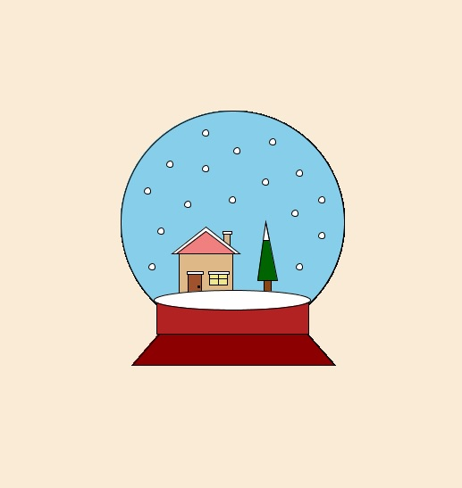

Outcomes include:
CS20-CP1: Apply various problem-solving strategies to solve programming problems throughout Computer Science 20.
(f) Analyze and implement programs with the goal of improving code to achieve the most elegant solution
CS20-CP2: Use common coding techniques to enhance code elegance and troubleshoot errors throughout Computer Science 20.
(a) Discuss and implement appropriate coding style (e.g., indentation and comments) and naming conventions for the programming language used in Computer Science 20.
(d) Create internal documentation (e.g., inline comments and header comments) for a program.
CS20-FP3: Construct and utilize functions to create reusable pieces of code.
(a) Explore the benefits of using built-in and user-defined functions.
(d) Develop user-defined functions that utilize argument passing.
Create at least two separate complex figures from at least 3 different shapes in Processing. Each complex figure must be created by a function with parameters and contain at least 3 separate colours. The entire picture must have at least 5 colours total using each of the following at least once:
Assignment Example:
